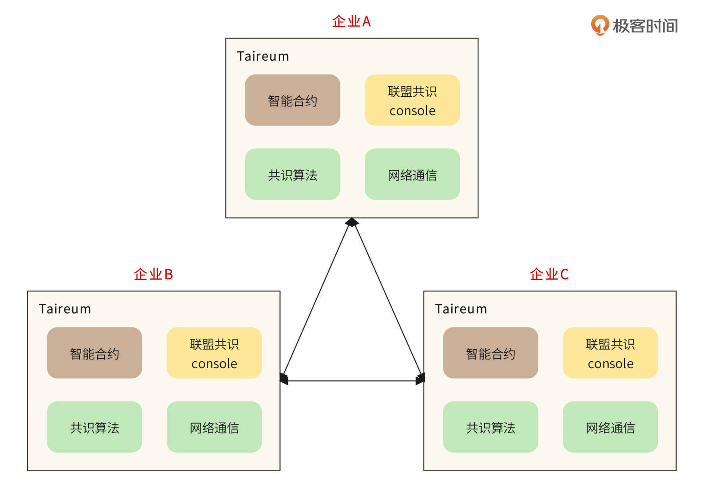
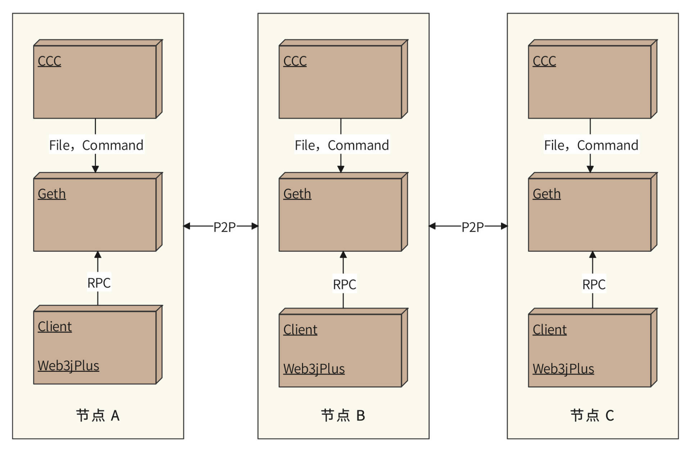
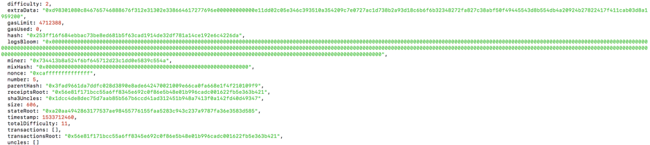

- 00 开篇词 “附身”大厂架构师，身临其境设计高并发系统.md.html
- 01 软件建模与文档：架构师怎样绘制系统架构蓝图？.md.html
- 02 高并发架构设计方法：面对高并发，怎么对症下药？.md.html
- 03 短 URL 生成器设计：百亿短 URL 怎样做到无冲突？.md.html
- 04 网页爬虫设计：如何下载千亿级网页？.md.html
- 05 网盘系统设计：万亿 GB 网盘如何实现秒传与限速？.md.html
- 06 短视频系统设计：如何支持三千万用户同时在线看视频？.md.html
- 07 海量数据处理技术回顾：为什么分布式会遇到 CAP 难题？.md.html
- 08 秒杀系统设计：你的系统可以应对万人抢购盛况吗？.md.html
- 09 交友系统设计：哪种地理空间邻近算法更快？.md.html
- 10 搜索引擎设计：信息搜索怎么避免大海捞针？.md.html
- 11 反应式编程框架设计：如何使方法调用无阻塞等待？.md.html
- 12 高性能架构的三板斧：分析系统性能问题从哪里入手？.md.html
- 13 微博系统设计：怎么应对热点事件的突发访问压力？.md.html
- 14 百科应用系统设计：机房被火烧了系统还能访问吗？.md.html
- 15 限流器设计：如何避免超预期的高并发压力压垮系统？.md.html
- 16 高可用架构的十种武器：怎么度量系统的可用性？.md.html
- 17 Web 应用防火墙：怎样拦截恶意用户的非法请求？.md.html
- 18 加解密服务平台：如何让敏感数据存储与传输更安全？.md.html
- 19 许可型区块链重构：无中心的区块链怎么做到可信任？.md.html
- 20 网约车系统设计：怎样设计一个日赚 5 亿的网约车系统？.md.html
- 21 网约车系统重构：如何用 DDD 重构网约车系统设计？.md.html
- 22 大数据平台设计：如何用数据为用户创造价值？.md.html
- 结束语 一个架构师的一天.md.html
- 捐赠
19 许可型区块链重构：无中心的区块链怎么做到可信任？
你好，我是李智慧。
过去几年，区块链正变成一个日渐热门的词汇，除了广为人知的比特币等数字货币，基于区块链的分布式账本和智能合约技术也越来越受到企业的重视，越来越多的企业也开始使用区块链技术进行跨企业的业务协作。2018 年 6 月 25 日，香港支付宝和菲律宾钱包 Gcash 利用区块链技术实现了跨境转账，仅 3 秒就实现跨境汇款到账，而以前则需要十几分钟到几天的时间。
一般我们把对所有公众都开放访问的区块链叫做“公有链”，而把若干企业构建的仅供企业间访问的区块链叫做“联盟链”，有时候也称作“许可型区块链”。上面提到的支付宝转账就是使用联盟链技术，目前比较有影响力的联盟链技术是 IBM 发起的 Hyperledger Fabric 项目，若干基于 Hyperledger Fabric 的联盟链应用已经落地。比如邮储银行的资产托管、招商银行的跨境结算都使用了 Hyperledger Fabric 技术。
而在公有链领域，目前看来，生态最完整、开发者社区最活跃、去中心化应用最多的公有链技术莫过于 Ethereum 以太坊。在智能合约和去中心化应用开发支持方面，以太坊的生态堪称业界最完备的典范，也受到了最多区块链开发者的支持。
相比于Fabric，使用以太坊开发区块链应用更加简单、易于上手，但是以太坊作为一个公有链技术，目前还无法应用于企业级的联盟链场景。所以我们准备在以太坊的代码基础上，进行若干代码模块的重构与开发。开发一个基于以太坊的企业级分布式账本与智能合约平台，即一个许可型区块链。这个许可型区块链产品名称为“Taireum”。
需求分析
所谓区块链（block chain），就是将不断产生的数据按时间序列分组成一个一个连续的数据区块（block），然后利用单向散列加密算法，求取每个区块的Hash值，并且在每个区块中记录前一个区块的Hash值，这些区块就通过Hash值串成一个链条，被形象地称为区块链。如果你想了解区块链更多的背景知识，可以参考我的这篇专栏文章《区块链技术架构：区块链到底能做什么？》。
以太坊（Ethereum）是一个去中心化的、开源的、有智能合约功能的公共区块链平台。以太币（ETH）是以太坊的原生加密货币，它是市值第二高的加密货币，仅次于比特币。而以太坊则是业界使用最多的区块链技术。
相比于比特币，以太坊最大的技术特点是支持智能合约，它是一种存储在区块链上的程序，由链上的计算机节点分布式运行，是一种去中心化的应用程序，也是区块链企业级应用必需的技术要求。
但是以太坊是一种公有链技术，并不适合用于企业级的场景，原因主要有三个：
- 在准入机制上，使用以太坊构建的区块链网络允许任何节点接入，也意味着区块数据是完全公开的。而联盟链的应用场景则要求仅联盟成员接入网络，非成员拒绝入网，并且数据也仅供联盟成员访问，对非联盟成员保密。
- 在共识算法上，以太坊使用工作量证明（PoW）的方式对区块打包进行算力证明，除非恶意节点获取了以太坊整个网络 51% 以上的计算能力，否则无法篡改或伪造区块数据，以此保证区块数据安全可靠。但是工作量证明需要花费巨大的计算资源进行算力证明，造成算力的极大浪费，也影响了区块链的交易吞吐能力。而在联盟链场景下，由于各个参与节点是经过联盟认证的，背后有实体组织背书，所以在区块打包的时候不需要进行工作量证明，这样可以大大减少算力浪费，提高交易吞吐能力。
- 在区块链运维管理上，以太坊作为公有链，节点之间通过 P2P 协议自动组网，无需运维管理。而联盟链需要对联盟成员进行管理，对哪些节点可被授权打包区块也需要进行管理，以保证联盟链的有效运行。
那么要如何做，才能既利用以太坊强大的智能合约与技术生态资源，简单高效地进行企业级区块链应用开发，又能满足联盟链对安全、共识、运维管理方面的要求？
Taireum需要在以太坊的基础上进行如下重构：
- 重构以太坊的 P2P 网络通信模块，使其需要进行安全验证，得到联盟许可才能加入新节点，进入当前联盟链网络。
- 重构以太坊的共识算法。只有经过联盟成员认证授权的节点才能打包区块，打包节点按序轮流打包，无需算力证明。
- 开发联盟共识控制台CCC（Consortium Consensus Console），方便对联盟链进行运维管理，联盟链用户只需要在 web console 上就可以安装部署联盟链节点，投票选举新的联盟成员和区块授权打包节点。
概要设计
Taireum 复用了以太坊强大的智能合约模块，并对共识算法和网络通信模块进行了重构改造，重新开发了联盟共识控制台，从而使其适用于企业级联盟链应用场景。使用 Taireum 部署的联盟链如图：

企业 A、企业 B、企业 C 合作建立一个联盟链，数据以区块链的方式存储在三家企业的节点上，实现分布式记账，并根据（基于智能合约的）联盟共识授权某些节点对区块数据进行打包。其他企业未经许可无法连接到该联盟链网络上，也不能查看区块链数据。
Taireum部署模型如下：

- Taireum中每个联盟企业都是一个Taireum节点，都需要完整地部署Taireum+CCC控制台， Client使用我们提供的web3jPlus sdk与Geth进行RPC通信。
- Geth是Tairem编译出来的区块链运行程序，里面包含重写的Tai共识算法，重构后的P2P网络模块，以及原始的以太坊代码。
- 不同节点之间的Geth使用P2P网络进行通信。
详细设计
针对以太坊不适合企业级应用的部分，Taireum将进行重构，详细设计如下。
Taireum联盟共识控制台
联盟共识控制台是Taireum为联盟链运维管理开发的web组件，企业可以非常方便地使用联盟共识控制台来部署联盟链运行节点、管理联盟成员和授权节点打包区块。
每个参与联盟链的企业节点都部署自己独立的联盟共识控制台。出于安全目的，每个企业节点的联盟共识控制台彼此独立，互不感知。他们需要通过调用联盟共识智能合约，对联盟管理事务进行协商，以达成共识。合约主要方法签名代码如下：
contract CCC {
//初始化合约，传入联盟创建者信息
//联盟创建者将成为联盟第一个成员和第一个拥有打包区块权限的节点
function CCC (string _companyname,string _email,string _remark,string _enode) public{
}
//联盟新成员申请
function applyMember(string _companyname,string _email,string _remark,string _enode,address _account) public{
}
//投票成为联盟成员
function VoteMember(uint _fromcompanyid,uint _tocompanyid) public {
}
//投票授权打包区块， 前提必须已经是联盟成员
function VoteMine(uint _fromcompanyid,uint _tocompanyid) public {
}
}
联盟共识智能合约目前的版本主要包括投票选举申请加入联盟的新成员，及投票选举联盟链新的区块打包节点。该智能合约由联盟链创立者在第一次启动联盟共识控制台的时候自动创建，是联盟链成员进行联盟管理和协商共识的最主要方式。
既然联盟成员节点部署的联盟控制台彼此独立、互不通信，那么联盟其他成员如何获得联盟共识智能合约的地址呢？
Taireum的做法是：联盟链创立者节点的联盟共识控制台第一次成功部署联盟共识智能合约时，就把这个合约的地址发给共识算法模块。共识算法在封装区块头的时候，将合约地址写入区块头的miner中。下图是记录有联盟共识智能合约地址的区块头。

其中，extraData记录经过椭圆曲线加密的区块打包者地址信息，其他节点通过解密得到打包节点地址，并验证该地址是否有权限打包节点；miner中记录联盟共识智能合约地址；nonce记录一个magic code “0xcaffffffffffffff”，表示该区块获得了共识合约地址并写入了当前区块（普通区块nonce magic code为”0x00ffffffffffffff”）。
这样，联盟链成员节点加入联盟链，同步区块链数据后，就可以从区块头中读取联盟共识智能合约的地址，然后通过联盟共识控制台调用该合约，参与联盟管理及协商共识。
Taireum联盟新成员许可入网
以太坊作为一个公有链，任何遵循以太坊协议的节点都可以加入以太坊网络，同步区块数据，参与区块打包。同时，以太坊作为开源项目，用户也可以下载源代码，自己部署多个以太坊节点，组成一个自己的区块链网络。但是只要这些节点可以通过公网访问，就无法阻止其他以太坊节点连接到自己的区块链网络上，获取区块数据，甚至打包区块。这在联盟链的应用场景中是绝对不能接受的，联盟链需要保证联盟内数据的隐私和安全。
Taireum重构了以太坊的P2P通信模块，只有在许可列表中的节点才允许和当前联盟成员节点建立连接，其他的连接请求在通信模块就会被拒绝，以此保证联盟链的安全和私密性。
许可列表即Taireum成员列表，通过前述的联盟共识智能合约管理。P2P通信模块通过联盟共识控制台调用智能合约，获得联盟成员列表，检查连接请求是否合法。
Taireum联盟新成员许可入网流程：
- 新成员下载Taireum，启动联盟共识控制台，然后在联盟共识控制台启动Taireum节点，获得节点enode url。
- 将enode url及公司信息提交给当前联盟链某个成员，该成员通过联盟共识智能合约发起新成员入网申请。
- 联盟其他成员通过智能合约对新成员入网申请进行投票，得票数符合约定后，新成员信息被记入成员列表。
- 新成员节点通过网络连接当前联盟链成员节点，当前成员节点p2p通信模块读取智能合约成员列表信息，检查新成员节点enode url是否在成员列表中，如果在，就同意建立连接，新成员节点开始下载区块数据。
Taireum授权打包区块
Taireum根据联盟链的应用特点，放弃了以太坊ethash工作量证明算法。在借鉴clique共识算法的基础上，Taireum重新开发了Tai共识算法引擎，对联盟投票选出的授权打包节点排序，轮流进行区块打包。
Tai共识算法引擎执行过程如下：
- 联盟成员通过联盟共识智能合约投票选举授权打包区块的节点（在合约创建的时候，创建者即联盟链创始人默认拥有打包区块的权限）。
- Tai共识算法通过联盟共识控制台访问智能合约，获得授权打包区块的节点地址列表，并排序。
- 检查父区块头的extraData，解密取出父区块的打包者签名，查看该签名是否在授权打包节点地址列表里，如果不在就返回错误。
- 根据当前区块的块高（block number），对授权打包区块的节点地址列表长度取模，根据余数决定对当前区块进行打包的节点，如果计算出来的打包节点为当前节点，就进行区块打包，并把区块头难度系数设为2，如果非当前节点，随机等待一段时间后打包区块，并把区块头难度系数设为1。难度系数的目的是尽量使当前节点打包的区块被加入区块链，同时又保证当前打包节点失效的情况下，其他节点也会完成区块打包的工作。
Taireum源码：https://github.com/taireum/go-taireum。
小结
区块链也是一个分布式系统，但是不同于我们前面讨论过的各种传统分布式系统。传统分布式系统的各个分布式服务器节点是只属于某一个组织的，叫做中心化数据存储，数据的准确性和安全性靠的是这个组织的保证，使用者需要信任这个组织，比如我们相信支付宝不会偷偷把我们余额里的钱转走。
而区块链的分布式服务器节点并不只属于某一个组织，区块链并没有中心，而且使用区块链也不需要信任某个组织，因为任何数据篡改都会导致区块链条的中断。
区块链的这种特性可以实现无中心的跨组织交易。传统上，平行的组织之间交易需要通过更上一级的组织作为中心记录交易数据，比如商业银行之间的转账，要靠中央银行的数据中心来完成。如果没有更上一级的组织呢，就很难进行交易了。而使用区块链技术，即使没有中心，这些组织也可以进行交易，同时很多上级组织也变得没有那么必要了。
所以区块链会使我们的社会变得更加自组织，也将会给全社会的生产关系带来更深刻的变革。
思考题
今天我想和你讨论两个问题，你也可以任选其一，回复在评论区。
- 许可型区块链的应用场景还有哪些？
- 你是否看好区块链未来的发展？为什么？
© 2019 - 2023 Liangliang Lee. Powered by gin and hexo-theme-book.